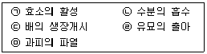
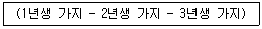

종자산업기사 (2014-08-17 기출문제)
1과목: 종자생산학 및 종자법규
1. 장일조건에서 화아분화가 촉진되는 작물은?
- 무
- 배추
- 양배추
- 시금치
(정답률: 81%)

2. 국유품종보호권의 처분을 수의계약의 방법으로 할 수 없는 때는?
- 국유품종보호권의 실시에 있어서 특정인의 기술이나 설비가 필요하여 일반경쟁입찰에 부칠 수 없을 때
- 1회에 낙찰되거나 낙찰자가 계약을 체결하지 아니하는 때
- 전용실시권의 설정을 받은 자에게 그 국유품종보호권을 양도할 때
- 천재지변이나 전시·사변 또는 이에 준하는 국가비상사태의 경우로서 일반경쟁입찰에 부칠 시간적 여유가 없을 때
(정답률: 62%)
3. 포장 및 종자 검사 기준의 용어 정의로 옳은 것은?
- 1차시료란 소집단의 한 부분으로부터 얻어진 적은 양의 시료를 말한다.
- 합성시료란 검사실에서 제출시료로부터 취한 분할시료로 품위검사에 제공되는 시료이다.
- 품종순도란 동일품종 내에서 유전적 형질이 그 품종 고유의 특성을 갖지 아니한 개체를 말한다.
- 정립이란 이종종자, 잡초종자 및 이물을 포함한 종자를 말한다.
(정답률: 93%)
4. 종자내 수분 종류 중 종자수분 측정시 포함시키지 않아도 되는 수분 형태는?
- 흡습수
- 결합수
- 화학수
- 자유수
(정답률: 54%)
5. 자식성 식물에 관한 설명으로 옳은 것은?
- 양성화로서 자웅이숙이며 자가불화합성이다.
- 양성화로서 자웅동숙이며 자가불화합성을 나타내지 않는다.
- 단성화로서 웅성선숙이나 자웅이주 또는 자웅이화이다.
- 단성화이나 자가불화합성이다.
(정답률: 69%)
6. 생식분열조직이 발달하여 이루어진 식물의 기관은?
- 꽃
- 줄기
- 잎
- 뿌리
(정답률: 93%)
7. 원원종 채종 재배시 이품종으로부터 포장 격리거리가 가장 먼 품종은?
- 벼
- 참깨
- 옥수수
- 팥
(정답률: 72%)
8. 고추의 1대 잡종(F1)종자 채종시 주로 이용되고 있는 교잡성은?
- 웅성붙임성
- 자가불화합성
- 여교잡
- 순계채종
(정답률: 62%)
9. 품종보호 출원을 하고자 할 때 제출할 사항이 아닌 것은?
- 품종보호 출원인의 성명과 주소
- 품종보호 출원인의 대리인이 있을 경우에는 그 대리인의 성명·주소 또는 영업소 소재지
- 품종보호 출원인의 영농실적
- 품종의 사진 및 시료
(정답률: 90%)
10. 종자 휴면의 원인으로 부적합한 것은?
- 종피의 불투기성
- 배의 미숙
- 발아억제물질의 존재
- 원형질 단백의 비응고
(정답률: 87%)
11. 국제적인 인정을 받기 위하여 발아검사를 할 때의 최소시료는 어느 정도여야 하는가?
- 50립씩 2반복
- 50립씩 4반복
- 100립씩 2반복
- 100립씩 4반복
(정답률: 90%)
12. 종자발달에서 배유의 발달과 기능에 대한 설명으로 틀린 것은?
- 배유세포는 주변조직으로부터 얻은 양분을 배에 공급한다.
- 쌍자엽 식물에서 배유는 분화되지만 종자발육과정에서 퇴화한다.
- 배유세포는 적극적으로 양분 흡수를 할 수 없다.
- 단자엽 식물에서 배유는 발달하여 양분저장 기능을 한다.
(정답률: 81%)
13. 종자의 발아과정의 순서로 옳은 것은?

- ㉡-㉠-㉢-㉤-㉣
- ㉡-㉤-㉠-㉢-㉣
- ㉤-㉡-㉠-㉢-㉣
- ㉤-㉠-㉡-㉢-㉣
(정답률: 89%)
14. 겉보리의 포장검사 규격 중 특정병에 해당되는 것은?
- 도열병
- 좀녹병
- 보리줄무늬병
- 비린깜부기병
(정답률: 66%)
15. 발아시험을 다시 실시해야 하는 경우는?
- 반복간 발아율 차이가 최대 허용오차 범위를 넘을 때
- 반복간 발아율 차이가 5%를 넘을 때
- 휴면을 타파시킨 종자의 발아율이 50% 미만일 때
- 한 개 이상의 정상묘가 자란 복수발아종자가 있을 때
(정답률: 87%)
16. 종자검사용 시료의 추출, 조제 및 관리상 주의해야 할 점으로 틀린 것은?
- 시료는 노브 색대 등으로 추출 한다.
- 제출시료는 종자검사에 이용되지 않는 시료를 말한다.
- 검사된 보급종 종자시료(ISTA검정용 시료)는 조절된 환경에 1년간 보관한다.
- 수분측정용 시료는 방수용기로 포장하여 제출하여야 한다.
(정답률: 88%)
17. 종자의 건조요령으로 틀린 것은?
- 수확, 조제 직후부터 건조시킨다.
- 맑은 날에는 마른 바닥에 펴 널고 자주 뒤섞어 준다.
- 비가 올 위험이 있을 때는 비닐을 덮어 비를 맞지 않게 한다.
- 직사광선 밑에서는 온도가 너무 오르지 않게 주의한다.
(정답률: 68%)
18. 작물별 채종지의 조건에 관한 설명으로 틀린 것은?
- 배추를 채종할 경우 봄부터 여름에 걸쳐 기온의 상승이 완만한 조건하에서 채종량이 많고 대립의 종자가 생산된다.
- 배추, 무 등은 늦가을에 화아가 분화되고 겨울철이 온난한 남부지방에서 채종하는 것이 좋다.
- 개화기부터 종자 등숙기까지의 강우는 종자의 수량과 품질에 크게 영향을 미치므로 이 시기에 건조한 곳이 적당하다.
- 개화기의 월 강우량이 300m이하 이어야 양파의 채종적지가 될 수 있다.
(정답률: 69%)
19. 벼 종자를 수입하려 할 때 누구에게 수입신고서를 제출하여야 하는가?
- 농림축산식품부장관
- 국립종자원장
- 시·도지사
- 국립농산물품질관리원장
(정답률: 55%)
20. 품종보호의 요건이 아닌 것은?
- 신규성
- 구별성
- 다수성
- 균일성
(정답률: 91%)
2과목: 식물육종학
21. 3계 교잡을 나타내는 것은?
- A × B
- (A × B) × (C × D)
- (A × B) × C
- [(A × B) × (C × D)] × [(E × F) × (G × H)]
(정답률: 93%)
22. 유전자 재조합의 기회가 가장 많은 식물은?
- 타식성 식물
- 자식성 식물
- 무성색식 식물
- 자식과 타식을 겸하는 식물
(정답률: 76%)
23. 불량힌 기상적(氣象的) 원인에 의한 품종퇴화(品種退化)는 어디에 속하는가?
- 유전적 퇴화
- 생리적 퇴화
- 병리적 퇴화
- 자연적 퇴화
(정답률: 50%)
24. 시금치를 인공교배하기 위하여 조생종과 만생종을 동시에 개화시키고자 할 경우 가장 적합한 처리는?
- 조생종에 단일 처리한다.
- 만생종에 단일 처리한다.
- 조생종에 장일 처리한다.
- 조생종에 장일 처리하고 만생종에 단일 처리한다.
(정답률: 64%)
25. 품종퇴화의 원인이 아닌 것은?
- 잡종강세
- 자연교잡
- 기계적 혼입
- 생리적 영향
(정답률: 57%)
26. 품종의 특성 유지 방법으로 관계없는 것은?
- 영양번식에 의한 보존재배
- 일대잡종 중의 우수한 개체를 자가채종
- 격리재배와 원원종재배
- 종자저장에 의한 특성유지
(정답률: 44%)
27. 자식성 작물에서 주로 이용되는 분리육종법은?
- 1수 1열법
- 계통집단선발법
- 순계분리법
- 모계선발법
(정답률: 80%)
28. 생물학적 분류의 최소 단위는?
- 계통
- 품종
- 종
- 속
(정답률: 85%)
29. 자가불화합성(自家不和合性)과 가장 관계가 적은 현상은?
- 배추의 교배종 채종
- 과수원의 수분수 혼식
- 봉오리 수분(雷受粉)
- 채종포의 격리재배
(정답률: 69%)
30. 유전자의 다면발현(pleiotropy)이란?
- 한 개의 유전자가 여러개의 형질 발현에 관여하는 것
- 유전자 두 개가 극도로 연관되어 있는 것
- 유전자가 환경변화에 부응하여 형질 발현이 달라지는 것
- 여러개의 유전자가 한 개의 형질 발현에 관여하는 것
(정답률: 96%)
31. 동질배수체의 육종적 이용에 관한 설명으로 틀린 것은?
- 식물체가 거대화되고 저항성이 강해지는 이점이 있다.
- 생육이 지연되고 임성이 낮아지는 등의 불리한 점이 있다.
- 양친의 특성을 모두 발현하거나 중간형질을 나타낸다.
- 육종은 염색체수가 적은 식물과 타식성 식물 및 영양기관을 이용하는 식물에서 효과적이다.
(정답률: 54%)
32. 내병성에 대한 특성검정을 할 때 틀린 것은?
- 대상 병이 상습적으로 발생하는 지역에다 검정포를 설치한다.
- 검정포를 설치할 때는 감수성 품종을 충분히 배치한다.
- 내병성을 검정하기 위해서는 인위적으로 병원균을 배양하여 접종할 필요도 있다.
- 내병성 정도의 판정은 감수성품종의 이병 정도에 관계없이 처리 후 일정기간이 지난 다음에 실시한다.
(정답률: 65%)
33. 유전자 중심지설에 대한 설명 중 옳은 것은?
- VAVILOV 학설이다.
- 작물의 발생 중심지에 열성변이가 많다.
- 2차 중심지에는 우성변이를 많이 보유한다.
- 진화 중심지에서 멀어질수록 변이는 증가한다.
(정답률: 72%)
34. 친환경 재배에 가장 유리한 품종은?
- 병충해와 각종 재해에 강한 저항성 품종
- 생육 기간이 단축되 단기성 품종
- 품질이 우수한 양질성 품종
- 수량성이 높은 다수성 품종
(정답률: 94%)
35. 계통육종법과 집단육종법의 비교 설명으로 틀린 것은?
- 계통육종법은 질적형질이나 유전력이 높은 양적형질을 육종목표로 할 때 흔히 이용된다.
- 집단육종법은 교잡후 초기세대부터 계통육종법은 어느 정도 고정된 후기세대부터 선발을 실시한다.
- 집단육종법에서 생산력검정을 실시하는 세대는 계통육종법에 비해 다소 늦어진다.
- 계통육종법에서 유전력이 낮은 형질을 초기세대에서 선발할 경우 우량형을 상실할 우려가 있다.
(정답률: 70%)
36. 완전연관의 경우 조환가는?
- 0%
- 25%
- 50%
- 100%
(정답률: 82%)
37. 2배체식물(2n)에서 반수의 염색체를 체세포 내에 가지고 있는 반수체식물에 함유된 상동염색체의 수는?
- n/2
- n
- 0
- 2n
(정답률: 50%)
38. 유전자원의 설명으로 옳은 것은?
- 환경에 의한 유전자 변이
- 실용성이 없는 유전자의 총칭
- 재배하는 품종만을 모은 집단
- 육종재료로 쓸 각종변이의 집합체
(정답률: 66%)
39. 유전상관 관계가 성립 되는 원인이 아닌 것은?
- 같은 유전자와 다면발현
- 다른 유전자간의 연관
- 형질이 다른 개체간의 접목
- 두 형질의 평행적 도태
(정답률: 39%)
40. 자연 교잡율이 4% 이하인 작물들은?(오류 신고가 접수된 문제입니다. 반드시 정답과 해설을 확인하시기 바랍니다.)
- 벼, 보리, 콩
- 밀, 옥수수, 토마토
- 토마토, 고추, 가지
- 수박, 오이, 무
(정답률: 66%)
3과목: 재배원론
41. 크기와 모양이 불균일한 종자를 대상으로 종자의 모양과 크기를 불활성 물질로 성형한 종자는?
- 프라이밍 종자
- 펠릿종자
- 코팅종자
- 매트종자
(정답률: 80%)
42. 나무 줄기가 상처를 입어 수분과 양분의 이동에 지장을 받을 때, 동일 식물의 줄기와 뿌리의 상하조직을 연결시키기 위한 접목법은?
- 거접(居接)
- 기접(寄椄)
- 근두접(根頭接)
- 교접(矯接)
(정답률: 65%)
43. 작물생육의 최저·최적·최고의 세 온도를 무엇이라고 하는가?
- 유효온도
- 생육온도
- 주요온도
- 삼온도
(정답률: 71%)
44. 작물의 다양성과 유연관계를 바르게 설명한 것은?
- 작물의 유연관계는 형태적 특성만으로 유연의 원근을 분명히 판단 할 수 있다.
- 서로 다른 식물사이에 교잡을 할 경우 유연이 멀수록 잡종종자가 생기기 쉽다.
- 염색체의 수가 같더라도 그 모양의 차이에 따라서 유연관계의 원근이 판단될 수 있다.
- 종자가 함유하고 있는 단백질의 동이질성의 차이로는 유연관계를 판단할 수 없다.
(정답률: 52%)
45. 다음 중 대공극이 많고, 투기력 및 투수력이 가장 큰 토양은?
- 사양토
- 사질토
- 양토
- 점질토
(정답률: 62%)
46. 배추밭 100m2 질소 10kg을 40 : 60의 비율로 2회 나누어 요소 엽면시비 하고자 한다. 1회째 요소비료 소요량은 약 얼마인가? (단, 요소의 질소 함유량은 46% 이다.)
- 8.7 kg
- 13.0 kg
- 26.1 kg
- 39.0 kg
(정답률: 52%)
47. 식물의 화성유도에 대한 설명으로 틀린 것은?
- 작물이 영양생장에서 생식생장으로 이행하여 화성(花成)을 이루도록 유도하는 것이다.
- 온도와 일장이 식물의 화성에 영향을 미친다.
- 추파맥류는 저온 감온상과 장일 감광상이 뚜렷하다.
- 벼의 단일 감광형 품종을 장일환경에서 생육시키면 출수가 촉진된다.
(정답률: 63%)
48. 북방형 목초의 특징이 아닌 것은?
- 저온에서 생육이 좋다.
- 고온에서 생육이 왕성하다.
- 앨팰퍼, 티머시 등이 이에 속한다.
- 여름철에는 하고현상이 발생한다.
(정답률: 85%)
49. 다음 중 가뭄의 피해가 가장 적은 작물은?
- 옥수수
- 수수
- 보리
- 귀리
(정답률: 55%)
50. 작물의 도복(倒伏)과 가장 관련성이 큰 형질은?
- 엽 크기
- 숙기
- 키
- 가지 수
(정답률: 85%)
51. 작물의 생장저해물질로 담배의 액아억제 등에 사용된 것은?
- MH(maleic hydrazide)
- IAA(β-indole acetic acid)
- Gibbeellin
- MCPA
(정답률: 82%)
52. 기계이앙 상자육모에 알맞은 상토 pH로 가장 적합한 것은?
- 4.0
- 5.0
- 6.0
- 7.0
(정답률: 49%)
53. 환경보존형 농업의 목표로 볼 수 없는 것은?
- 생물학적인 순환과 조절기능의 이용
- 고투입을 통한 생산성 제고
- 경영방법혁신을 통한 생산성 향상
- 식량의 품질 및 안전성 보장
(정답률: 87%)
54. 일장효과에 미치는 조건을 바르게 설명한 것은?
- 벼는 주간엽수가 7~9매 발육단계일 때 감응한다.
- 광의 강도가 증가할수록 효과가 낮다.
- 청색광이 효과가 가장 크다.
- 장일식물은 질소가 높은 것이 영양생장이 억제되어 장일효과가 잘 나타난다.
(정답률: 51%)
55. 냉해에 의해 유발되는 현상으로 볼 수 없는 것은?
- 물질의 동화전류가 촉진된다.
- 출수와 등숙이 지연된다.
- 임실율이 저하된다.
- 병해의 발생이 많아진다.
(정답률: 79%)
56. 방사성동위원소의 농업적 이용에 해당되지 않는 것은?
- 추적자로서의 이용
- 식품저장에 이용
- 육종적 이용
- 생리활성물질로 이용
(정답률: 45%)
57. 결실 가지의 연령순으로 옳은 것은?

- 포도 – 복숭아 - 배
- 복숭아 – 포도 - 배
- 배 – 복숭아 - 포도
- 포도 – 배 – 복숭아
(정답률: 71%)
58. 버널리제이션의 효과를 감소시키는 조건은?
- 건조처리
- 탄수화물의 공급
- 최아종자의 고온버널리제이션시 암조건
- 산소의 공급
(정답률: 54%)
59. 농용비닐로 멀칭 재배할 때 지온의 상승효과가 가장 큰 것은?
- 투명 필름
- 흰색 필름
- 흑색 필름
- 녹색 필름
(정답률: 73%)
60. 연작에 의해서 유발되는 병해와 해당 작물의 연결이 틀린 것은?
- 풋마름병 – 토마토
- 뿌리썩음병 - 인삼
- 덩굴쪼김병 - 수박
- 도열병 – 벼
(정답률: 53%)
4과목: 식물보호학
61. 1988년 국내에서 발견된 저온성 외래 해충으로 년에 1회 발생하며, 벼 재배에 심각한 문제가 되고 있는 해충은?
- 애멸구
- 끝동매미충
- 이화명나방
- 벼물바구미
(정답률: 52%)
62. 잡초의 주요 특성 중 생리적 특성으로 볼 수 있는 것은?
- 다양한 환경조건에서도 결실이 가능하다.
- 종자의 성숙기가 작물의 수확기와 일치한다.
- 영양번식으로 물리적 방제를 극복할 수 있다.
- 작물에 비하여 광합성 능력이 크다.
(정답률: 47%)
63. 농약 잔류허용량 결정지 가장 고려되어야 할 사항은?
- 살포 횟수
- 반감기
- 제제형태
- 일일 섭취허용량
(정답률: 75%)
64. 식물병의 피해와 원인이 된 식물병이 잘못 연결된 것은?
- 1945년 아일랜드의 기근 – 감자 역병
- 1942년 인도 벵갈지방의 기근 – 벼 깨씨무늬병
- 1970년 미국 옥수수의 피해 – 옥수수 깜부기병
- 19세기 말 스리랑카의 커피 수입 대체 – 커피 녹병
(정답률: 59%)
65. 어떤 곤충이 다른 곤충을 잡아먹는 식성을 무엇이라고 하는가?
- 포식성(捕食性)
- 기생성(奇生性)
- 부식성(腐食性)
- 균식성(菌食性)
(정답률: 91%)
66. 무사마귀병에 대한 설명으로 옳은 것은?
- 자냥균에 의한 병이다.
- 국화과 식물에 주로 발생한다.
- 산성 토양일수록 많이 발생한다.
- 주 전염원은 토양전염보다 공기전염이다.
(정답률: 58%)
67. 소수의 주동유전자에 의해 발현되는 고도의 저항성을 무슨 저항성이라고 하는가?
- 단순저항성
- 중도저항성
- 진정저항성
- 부분저항성
(정답률: 75%)
68. 석회유황합제는 어떤 계통의 농약인가?
- 무기황제 계통
- 유기황제 계통
- 유기 염소제 계통
- 유기인제 계통
(정답률: 69%)
69. 다음 중 잡초발생량이 가장 많은 논은?
- 담수직파재배 논
- 건답직파재배 논
- 무논골뿌림재배 논
- 어린모 기계이앙재배 논
(정답률: 67%)
70. 진딧물류의 특징으로 틀린 것은?
- 단위생식을 한다.
- 천적이 없다.
- Virus를 매개한다.
- 흡즙성 해충이다.
(정답률: 88%)
71. 작물의 피해원인 중 생물에 의한 피해가 아닌 것은?
- 병원균에 의한 피해
- 해충에 의한 피해
- 바람에 의한 피해
- 잡초에 의한 피해
(정답률: 89%)
72. 유충이 흙을 이용해 고치집을 만드는 곤충이 포함된 곤충류는?
- 멸구류
- 나방류
- 풍뎅이류
- 하루살이류
(정답률: 70%)
73. 액상 시용제의 물리적 성질에 속하는 것은?
- 분말도
- 입도
- 유화성
- 분산성
(정답률: 67%)
74. 무시아강에 속하는 곤충의 목(目)은?
- 돌좀목
- 집게벌레목
- 사마귀목
- 파리목
(정답률: 74%)
75. 살비제란 무엇인가?
- 비소가 들어있는 살균제이다.
- 응애를 죽이는 약제이다.
- 살포시 바람에 의해 비산되는 농약을 말한다.
- 소화중독제가 아닌 모든 농약을 말한다.
(정답률: 85%)
76. 이 병에 걸린 곡물을 가축에게 먹였을 때 중독 증상을 일으키는 맥류의 병해는?
- 깜부기병
- 녹병
- 붉은곰팡이병
- 흰가루병
(정답률: 67%)
77. 다음 작물 병원 중 가장 작은 병원체는?
- 진균
- 세균
- 바이러스
- 바이로이드
(정답률: 79%)
78. 약제의 입자가 가장 작아서, 다른 방법으로는 부착이 곤란한 곳에도 잘 부착할 수 있게 농약을 처리하는 방법은?
- 살분법
- 연무법
- 분무법
- 도포법
(정답률: 65%)
79. 저온장해에 대한 설명으로 틀린 것은?
- 식물체 내에 결빙이 생겨서 받는 피해를 동해(freezing injury)라 한다.
- 동결(freezing)과 융해(thawing)의 반복은 식물체의 동결온도를 낮추는 효과가 있다.
- 동해에 강한 작물일수록 세포내 결빙이 적다.
- 봄에 일찍 파종하는 작물이나 과수의 꽃은 상해(frost injury)를 받기 쉽다.
(정답률: 81%)
80. 잡초에 의한 피해 현상이 아닌 것은?
- 작물과 잡초 사이에 상호대립억제 작용이 있다.
- 농작업환경을 악화시킨다.
- 토양 비옥도를 높이고, 침식을 방지한다.
- 잡초의 화분이 작물에 유전적으로 혼입될 수 있다.
(정답률: 89%)